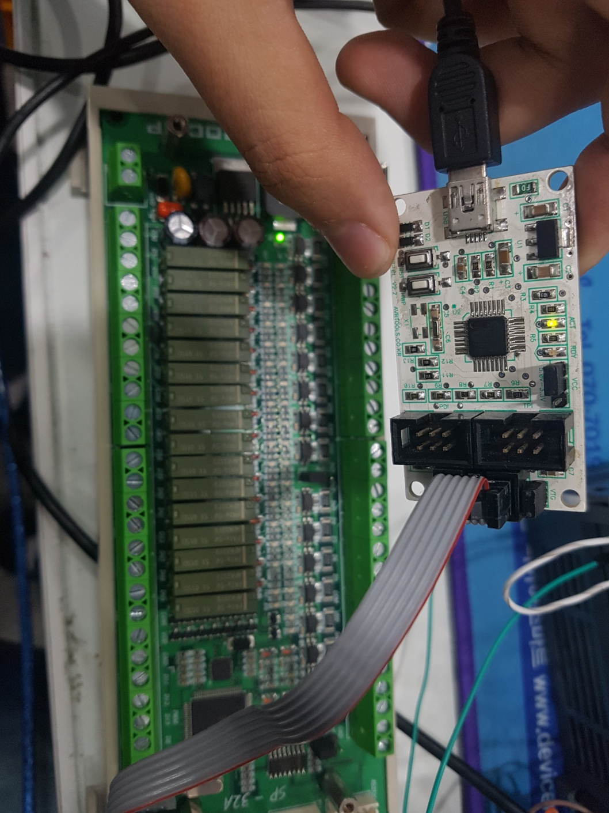

1Y 9M
기업부설연구소 근무
3.6억
인프라 예산 직접 집행
8개사
외주 계약·관리 총괄
10Y+
게임 경력 (LoL 시즌2~)
기업부설연구소 내부 경험
(주)엣지크로스 기술연구소에서 HW 개발·BOM·자재·행정 풀사이클 직접 수행 — 연구소 운영 리듬 체화
총무·행정 올라운더
3.6억 예산 집행 · ERP 도입 풀사이클 단독 수행 · 외주 8개사 관리 · 비용 절감 연 500만 원
게이머 DNA
LoL 시즌2부터 10년+ · 니케 플레이어 · 스텔라 블레이드 관심 — 게임이 일상인 사람
01 AI 에이전트 문서 파이프라인
개인 프로젝트
2026.01 — 현재
LLM 기반 채용 문서 자동화 시스템 구축
- 200줄+ 시스템 프롬프트 설계 — AI 워크플로우 자동화 · 모델 라우팅 · 품질 기준 정의
- 500+ 평가-피드백 사이클 · 멀티 AI 에이전트 핸드오프 체계(AI_CONTEXT.md) 설계·운영
- Python: .hwpx 자동화 · 이메일 발송 자동화 · Git 버전관리 체계 구축
- Claude / ChatGPT / VS Code Antigravity 환경에서 매일 실무 운용 중 → 새 도구 즉시 적용 역량
ClaudeChatGPTPrompt Eng.PythonGitVS Code
02 커스텀 ERP 도입 풀사이클
(사)함께만드는세상 — 경영지원부
2023.07 — 2024.12 · 1Y 6M
High-Q ERP 도입 프로젝트 — 실무 전담 (대리)
- 인프라 예산 약 3.6억 원 직접 집행 (집행률 88.5%) · 외주업체 8개사 계약·관리·정산 총괄
- 요구사항 정의 → 프로세스 설계 → 계정과목 표준화 → 데이터 마이그레이션(엑셀→Tibero) → 검수
- PC/네트워크 트러블슈팅 내재화 → 유지보수 비용 30% 절감 · IT자산 수명주기 관리
- 재계약 협상으로 연 약 500만 원 절감 · 법정 안전 점검 총괄 (소방·승강기·전기)
ERPTibero DBSQL프로세스 설계예산관리마이그레이션

03 IoT 원격 모니터링 시스템 개발 · QA
(주)맨지온 — 개발부
2020.03 — 2021.11 · 1Y 9M
임베디드 시스템 개발 · QA (대리)
- ESP32 기반 해수담수화 프로토타입 — 센서·밸브 제어, Blynk 원격 모니터링 대시보드 구현
- 통신 장애 로그 분석 → 간헐적 끊김 패턴 식별·해결 프로세스 확립
- UI/UX 테스트 시나리오 설계 및 QA — 결함 재현·추적·보고 체계 수립
- 기술 문서 작성 · 현장 하드웨어 직접 점검 → 기술을 이해하는 관리자 역량 확립
ESP32C++IoTBlynkQA로그분석

04 기업부설연구소 운영 지원
(주)엣지크로스 — 기술연구소
2016.05 — 2018.02 · 1Y 9M
★ 기업부설연구소 직접 경험
H/W 개발 · 연구 자재·행정 관리 (주임)
- 회로설계 → PCB 레이아웃 → 시제품(납땜·실장) → 테스트·검증 풀사이클 직접 수행
- BOM 관리 체계 구축 — 다품종 소량 부품 추적, 납기 준수율 100% 달성
- 자재 발주·수령·재고·예산 관리 · 비교견적 · 납기 추적 · 시제품 결과 문서화
- 연구원 행정 지원 · 생산 일정 조율 → 연구소 운영 프로세스를 내부에서 체화
회로설계BOM자재관리납기관리시제품QA연구소행정

05 Game Culture
⚔️
League of Legends
시즌2부터 10년+
Platinum
♟️
TFT
매시즌 정규 플레이
Active
🎯
승리의 여신: 니케
플레이 · 복귀 준비 중
SHIFT UP
🗡️
스텔라 블레이드
SHIFT UP 관심 IP
SHIFT UP
연구소를 안에서 경험한 관리자
기업부설연구소 현장 경험 · 3.6억 원 예산 행정 실행력 · 10년+ 게임 문화적 진정성
세 가지를 갖춘 사람이 시프트업의 연구소를 지원합니다.